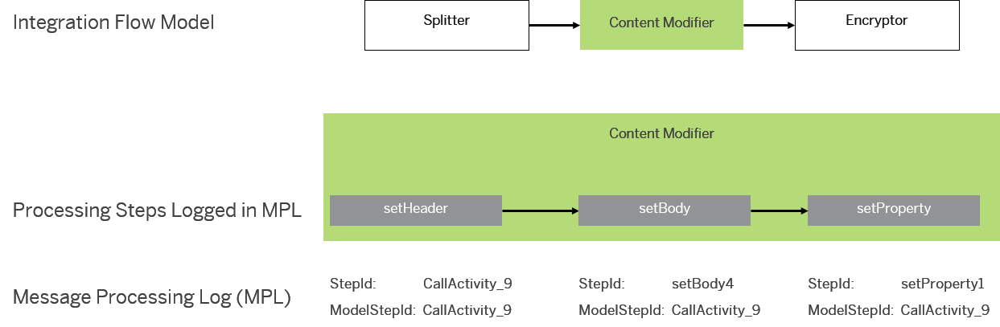

At design time of an integration project, the way how a message is to be processed is specified by a number of integration flow steps (for example, content modifier, encryptor or routing step). When an integration flow is being processed at runtime, errors can occur at several individual steps within the process flow (referred to as processing steps to differentiate them from the integration flow steps as modelled at design time).
Integration flow steps can specify message processing at different levels of complexity. Therefore, in general an integration flow step (design time) can result in multiple processing steps steps at runtime.
Each processing step gets a unique Step ID which is displayed in the message processing log.
For example, a content modifier step in an integration flow model can (at runtime) be related to multiple processing steps: The content modifier step can be configured in a way that one processing step changes the message header, one the message body, and another one an exchange property.
In order to enable the integration developer to relate a modelled step to an error occurring at a certain processing steps, at runtime, the same identifier is assigned to each processing step that relates to the same integration flow step. This identifier is referred to as Model Step ID.
The following figure illustrates this behavior for a content modifier step in an integration flow, where three different processing steps are related at runtime to the content modifier.
To allow an integration flow developer to relate to a certain integration flow step during error handling, the runtime provides the Model Step ID of the integration flow step where the error occurred as Exchange Property: SAP_ErrorModelStepID. The content of the property can then be evaluated in the error handling.
You can use the property for instance in a condition definition of a Router step to choose a different error handling strategy depending on the step where the error occurred.
Example for a routing condition : ${property.SAP_ErrorModelStepID} = ‘CallActivity_1’
When referring to an integration flow step for error handling, you need to know which Model Step ID has been defined for an integration flow step. To display this attribute, position the cursor on the step and in the tooltip you get the Model Step ID displayed as ID. To display this attribute for an adapter, position the cursor on the connection shape in the integration flow model and in the context menu choose Technical Information.